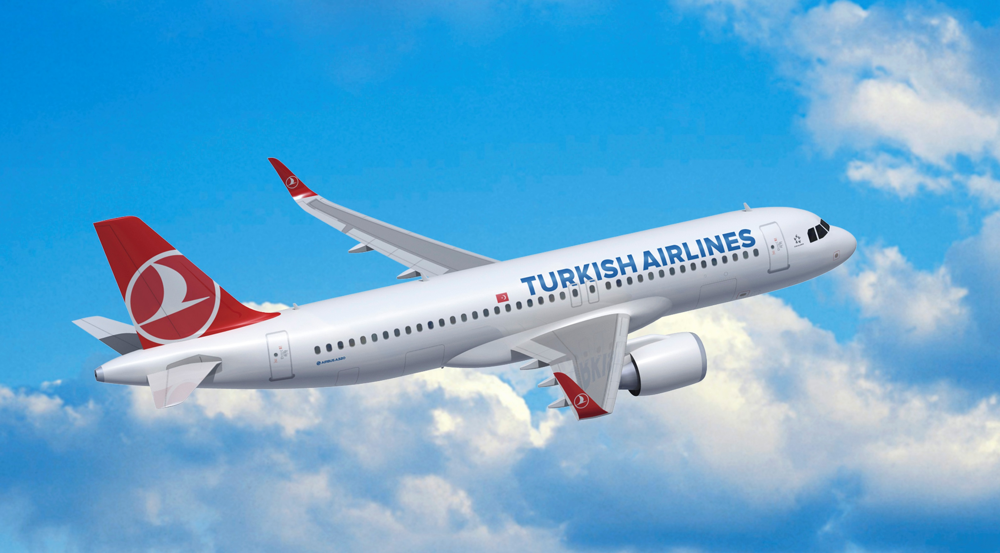
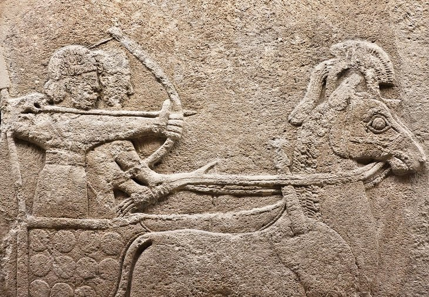
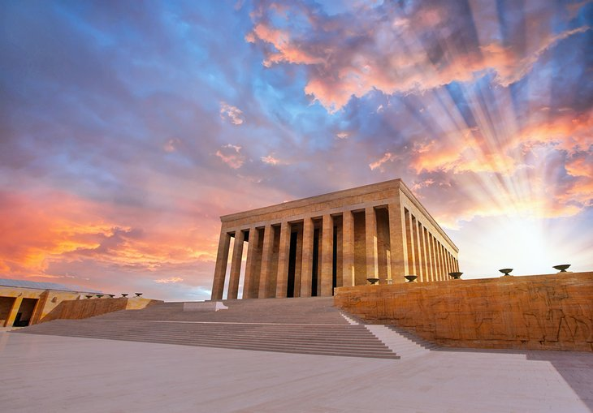
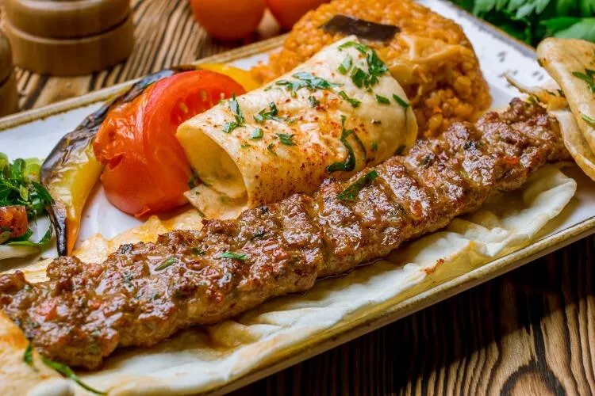
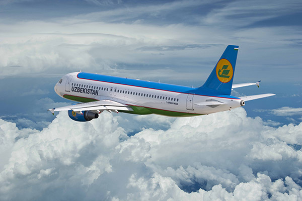

-
-
Travel expands a person's worldview and gives pleasure to life. I do
not deny it and I travel often every year. Unfortunately, I haven't
been able to travel as much as I would have liked this year. The
reason for this was that I went to other extra classes outside of
school.
-
Last month, I went to Turkey with my family. We stayed in Ankara,
near Istanbul. We stayed 2 days in there. I will tell you about it
now. We went there by plane. We paid $700 per person. The worst this
was the cheapest ticket price. We went there as a group of 6 and
paid $4,200. But we paid for our hotel, travel and meals separately.
-

-

-
First day, we visited museums, historical monuments, mausoleums. The
Museum of Anatolian Civilizations is one of the most impressive
museums I've seen. This museum is reason enough to include Ankara on
your Turkey itinerary. Because, It's the only place in the country
where you can grasp the full scope of Anatolia's pre-Classical-era
human history.
-
Then we went to Atatürk's mausoleum. Ankara's most visited
attraction is Turkey's most important modern shrine. At the top of
the hill on the western side of the city center is the mausoleum of
Atatürk (Mustafa Kemal), the founder of the Turkish state. large
area, includes a large museum. Then we left there and went to the
hotel.
-

-

-
My friends who went to Turkey praised Turkish food very much. Ankara
has more cafes and restaurants than any other city. Therefore, on
the second day, we went to one of Ankara's most famous restaurants,
Duveroğlu, and ate delicious food there. I usually eat kebab more
than any other food. That's why I ate kebab there. My family ordered
another meal.The next day we had to return to Tashkent, so we left the restaurant and went to the hotel.
-

-
This is how our trip to Turkey went and we took an evening flight
back to Tashkent.